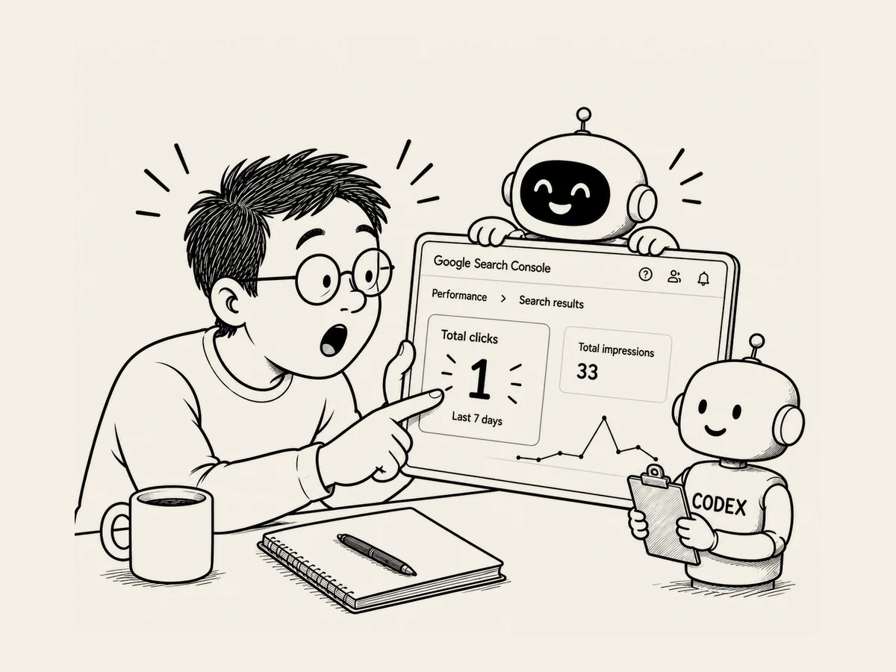

25.
ついに、クリック 1。
何日もの間、
ドキドキしながら
分析画面をのぞいていた。
まだ誰も、
僕のサイトには来ていない。
Google 検索に
少しずつ表示され始めていることは
確認できた。
でも、
クリックはない。
0。
次の日も 0。
その次の日も 0。
ついまた見に行って、
数字だけ確認して閉じる。
数日たった。
また画面を開いた。
あれ？
数字が変わった気がする。
もう一度見た。
クリック 1。
昨日まで、
たしかに 0 だった。
胸がドキドキする。
今度は GA4 のときみたいに、
自分で入った記録を見て
喜んでるんじゃないよね？
急いで画面をキャプチャして、
AI に見せた。
「これ、
クリック 1 で合ってる？」
AI が画面を確認する。
「はい。
実際に Google 検索から
1 回クリックされています」
「僕が入ったんじゃなくて？」
「はい。
誰かが Google の検索結果で
このサイトを見つけて、
クリックして入ってきたということです」
本当だ。
ついに誰かが、
Google で僕のサイトを見つけて
入ってきた。
たった一人。
クリック一回。
たいしたことじゃないのかもしれない。
でも、
僕にとっては違った。
知っている人に
サイトのアドレスを教えたわけじゃない。
広告を出したわけでもない。
世界のどこかで、
誰かが何かを検索した。
Google が、
数えきれないほどあるウェブサイトの中から、
僕が作ったサイトを表示した。
そして、
その人がクリックした。
僕がこの仕事を始めたときに
想像していたことが、
本当に起きた。
必要とされるものを作って、
インターネットに置いておけば、
検索エンジンが
それを必要としている人を見つけて、
つないでくれる。
本当にそんなことが起きるのか、
ずっと気になっていた。
そして今、
数字の 1 が、
そこに表示されている。
